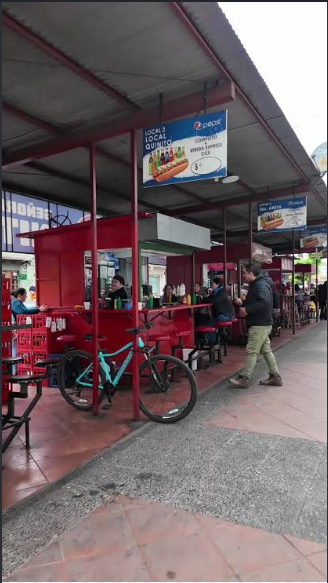

It is like a hot dog, but much better; you can find them at street stands and food places. My favorite stands are on 5 Oriente Street.
It looks like a hot dog, smells like boiled bread, and tastes like a hot dog—but with other ingredients that make the food even more flavorful.

In my humble opinion, the completo is a great fast and easy food to make for the whole family, but if you want to eat something that fills you up more, then eat a completo. Also, you can add different ingredients depending on your tastes, so each person can prepare it in a different way. For me, it is a simple but very tasty food that you can eat at any time.
In my opinion, this traditional Chilean dish is very simple and easy to prepare. It is a staple at gatherings, birthdays, and parties, and you can find an excellent *completo* almost anywhere. I have eaten this dish most often—and found it best prepared—on 5 Oriente Street; furthermore, in Talca, the bread is made somewhat differently than in other regions: it is first steamed in a hot pot, which makes it very tender and soft. Even if there are ingredients I don't care for, I can simply leave them out; for instance, I usually remove the avocado, and it still tastes like an authentic *completo*. Chileans really deserve credit for creating such a delicious dish; I look forward to trying more food of this caliber in the country. To wrap up my review, I give it a score of 8/10.